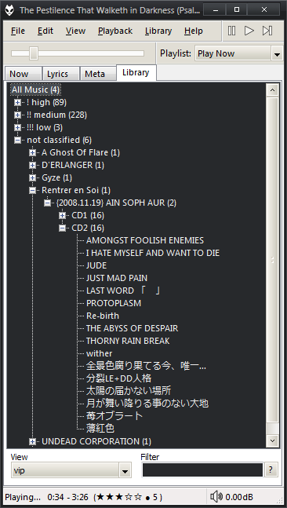

foobar2000 theme: Tomorrow Night Bright
Playing with foobar2000's Default UI, I made this minimalistic/simple theme with Tomorrow theme colors (Night Bright version).
Screenshots
You've got the menu + playback controls in the same line. Underneath, seekbar + playlist dropdown. In the status bar is the time, rating (view) and volume.
There four views/tabs in total:
"Now" has the active playlist, grouped by artist (in blue) + album (green). Tracks only show their title (red) and comment (orange).

"Lyrics" has the cover art and the lyrics.

"Meta" is the playing track details.

"Library" is self explanatory.

There's no playlist list (only the dropdown) because I couldn't find one that prevents me from accidental deletion :P. If you want to manage them, go to View > Playlist Manager
Requirements
Place the EsPlaylist configuration (foo_uie_esplaylist.dll.cfg) in [foobar_home]/configuration and the theme (tomorrowbright.fth) where you please.
Import the theme (Preferences > Display > Default User Interface > Import theme). In the playlist, right click > grouping > inline - Tomorrow night bright. In the lyrics panel, edit the preferences (panel preferences) and change the highlight color to RGB 236,206,88 (yellow).
The "headers" colors (in playlist, the %artist%, %album%; and in "meta", the "metadata", "location", "other"...) is configurated in Default User Interface > Colors and fonts (if you don't like violet).
If you want to change the control buttons, you must use 16x16 .ico files.
The Windows theme is SlanXP2 for 7, that's way the DUI looks better than defaults.